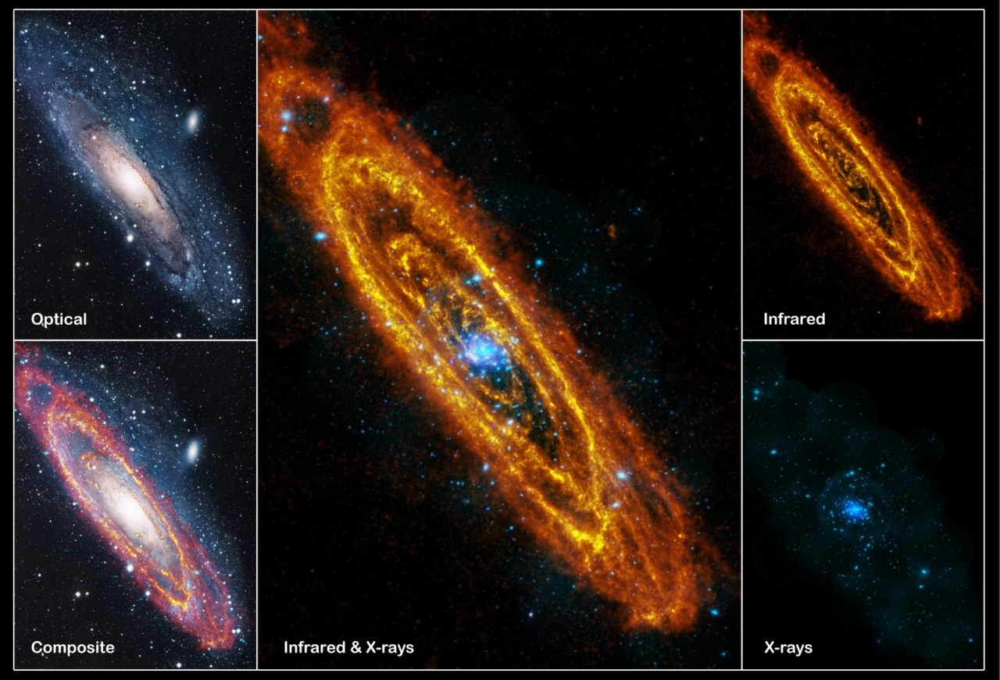
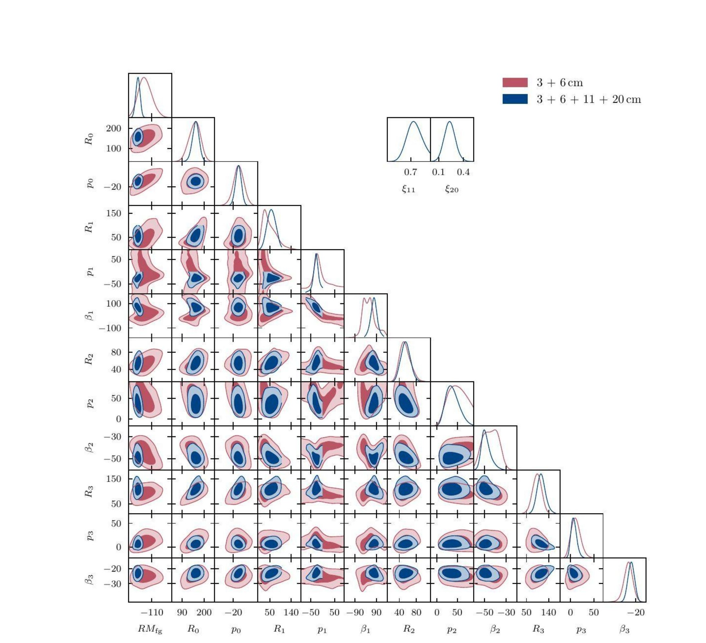
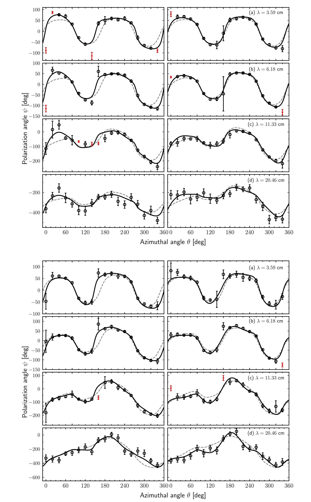

Monthly Notices of the Royal Astronomical Society, 545(2), staf2041 (2025)
Spiral galaxies like the Milky Way and M31 host coherent magnetic fields of a few microgauss, threading tens of kiloparsecs across their disks — dynamically significant, not just a passive trace. This paper revisits the field of M31, the Andromeda Galaxy — our closest well-resolved laboratory for galactic magnetism — using a Bayesian Monte Carlo fitting approach that extends the classical Fourier-mode picture to higher order.

M31 across the spectrum. Optical, infrared, X-ray, and composite views of the Andromeda Galaxy. The infrared and X-ray emission trace the star-forming spiral structure and hot gas that thread the same disk this work maps in polarised radio light.
M31 is the largest member of the Local Group — an SA(s)b-type spiral with over a trillion stars, extensively mapped across the electromagnetic spectrum. Its size, proximity, and well-characterised regular magnetic field make it a long-standing benchmark for testing galactic dynamo theory.
The analysis combines radio continuum polarisation observations from the Effelsberg 100-m telescope and archival VLA data, spanning four wavelengths to disentangle the magnetic field geometry from Faraday rotation and depolarisation effects.
| Wavelength | Frequency | Telescope | Resolution |
|---|---|---|---|
| 3.59 cm | 8.35 GHz | Effelsberg | 3.0′ |
| 6.18 cm | 4.85 GHz | Effelsberg | 3.0′ |
| 11.33 cm | 2.65 GHz | Effelsberg | 4.4′ |
| 20.46 cm | 1.46 GHz | VLA + Effelsberg | 45″ |
Conventional χ² minimisation struggles with this kind of multimodal, correlated parameter space, and gives little insight into parameter uncertainty. Instead, the regular magnetic field is constrained using a full Bayesian inference framework — one that explores the parameter space robustly and quantifies uncertainties and correlations naturally.
The regular magnetic field is expressed as a sum of Fourier modes (m = 0, 1, 2, 3...) in galactocentric azimuth. Each mode contributes an amplitude Rm, a pitch angle pm, and a phase angle βm — together with the foreground rotation measure RMfg and two depolarisation scaling factors, ξ₁₁ and ξ₂₀, for the longer wavelengths. All of these are treated as free parameters in the fit.
The posterior probability of the parameters follows Bayes' theorem: posterior ∝ likelihood × prior. Assuming Gaussian polarisation-angle uncertainties — justified by the Central Limit Theorem, since each line of sight samples many independent turbulent cells — the likelihood reduces to a standard χ² statistic, summed over every observed wavelength and azimuthal sector simultaneously.
Pitch angles are restricted to |pm| ≤ 90°, phase angles to |βm| ≤ 180°/m, and the depolarisation factors to the physically meaningful range [0, 1]. The foreground rotation measure is given a broad uniform prior spanning all plausible values — keeping the fit agnostic beyond these physical bounds.
The posterior is sampled with Metropolis–Hastings MCMC via the Python package Cobaya, run until Gelman–Rubin R − 1 < 0.01 (or 10⁶ samples), discarding the first 30% of each chain as burn-in.
Models are compared on both maximum likelihood and Bayesian complexity, C = ⟨χ²⟩ − χ²(α̂) — a more complex model only wins if it meaningfully improves the fit, guarding against over-fitting.
Before touching real data, the pipeline is tested on synthetic polarisation angles from known input fields. It recovers the true parameters within their fitted uncertainties in every case.

The posterior, laid bare. Diagonal panels show each parameter's 1D marginalised posterior; off-diagonal panels show 2D posteriors with 1σ/2σ contours (6–8 kpc ring). Blue: all four wavelengths; red: 3.59+6.18 cm only. Isolated, unimodal peaks — no elongated or split contours — confirm the chains converge cleanly with only weak parameter correlations.

Model vs. data, ring by ring. Observed (points) and fitted (solid line) polarisation angles across all four radial rings — 6–8, 8–10 (top block) and 10–12, 12–14 kpc (bottom block) — at all four wavelengths. The grey dashed line is the m = 0 mode alone; the gap to the solid line is exactly the higher-order-mode contribution. Red points were excluded as outliers.
The classic reference for M31's magnetic field is Fletcher et al. (2004). This work improves on it in three concrete ways:
The 3.59, 6.18, and 11.33 cm observations used here (Beck et al. 2020) span 2001–2012 and have substantially lower noise than the data available to Fletcher et al. (2004), simply due to advances in receiver technology over the intervening years — the same physical field, measured with a sharper instrument.
Earlier studies — including Sokoloff et al. (1992), Berkhuijsen et al. (1997), and Fletcher et al. (2004) itself — relied on χ² residual minimisation, which is inefficient in this highly multimodal, correlated parameter space, sensitive to the initial guess, and gives no honest handle on parameter uncertainty. The Bayesian MCMC approach used here explores the full posterior directly, yielding both best-fit values and statistically meaningful uncertainties and correlations.
Fletcher et al. (2004) derived field strength from polarised synchrotron intensity, which is sensitive to both the coherent regular field and the anisotropic turbulent field — inflating the inferred strength. This work instead derives field strength from Faraday rotation, which responds only to the coherent line-of-sight field, giving a more representative ~1.7–2.7 μG rather than the higher values intensity-based methods report. The result agrees closely with the independent rotation-measure analysis of Beck & Berkhuijsen (2025).
Beyond the specific result for M31, this work establishes a general Bayesian methodology for inferring the regular magnetic field orientation, pitch angle, and strength of nearby spiral galaxies directly from multi-frequency polarisation data — while simultaneously accounting for Faraday rotation and depolarisation. The same framework is applied next to IC 342, providing a statistically consistent basis for comparing magnetic field properties across different galactic environments.